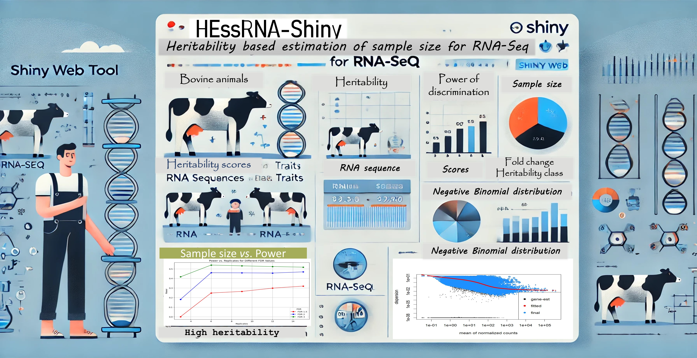

HEssRNA-Shiny is a shiny based web tool that helps researchers to estimate sample size for conducting an experiemnt using RNA-Seq data. A novel tool/package that incorporates heritability, tissue type, and other experimental factors to predict the optimal sample size for RNA-Seq studies The estimation of sample size before conducting an experminet is crucial for getting optimum results. This tool incorporates the use of heritability traits of Bos taurus from the CorrDB database (https://www.animalgenome.org/cgi-bin/CorrDB/index) and helps in estimating the sample size based on the heritabilty score of a trait. The method integrates statistical modeling to account for variability in gene expression data and provides a user-friendly framework to guide researchers in experimental planning by predicting sample size based on different class of heritability values viz., high, medium and low. By offering a practical and adaptable approach, HEssRNA addresses the challenges of designing RNA-Seq experiments with appropriate power for detecting differentially expressed genes. The tool's effectiveness was validated across cattle RNA-Seq datasets, demonstrating its utility for researchers seeking cost-effective and statistically sound experimental designs.
